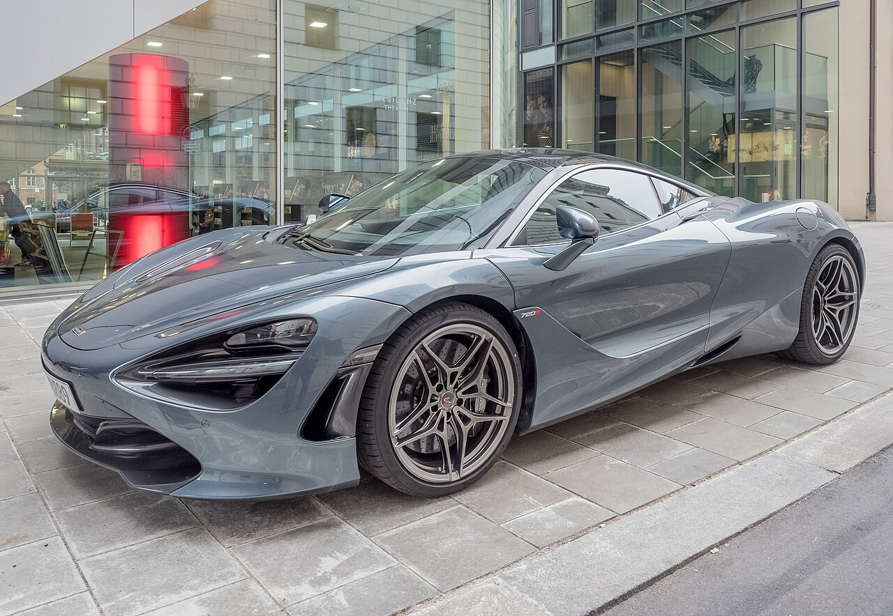
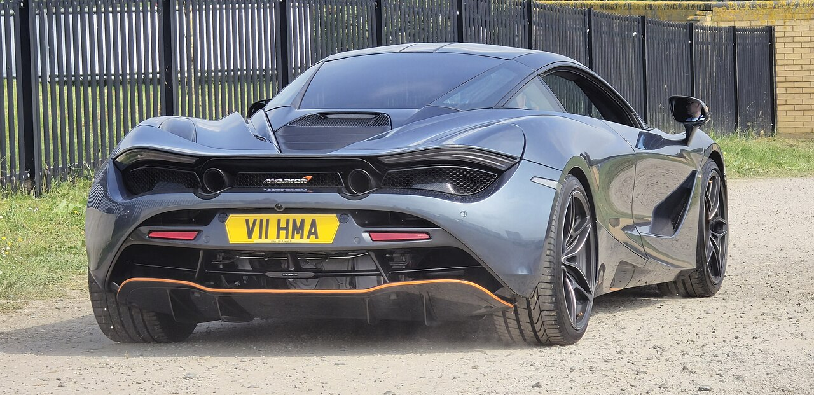
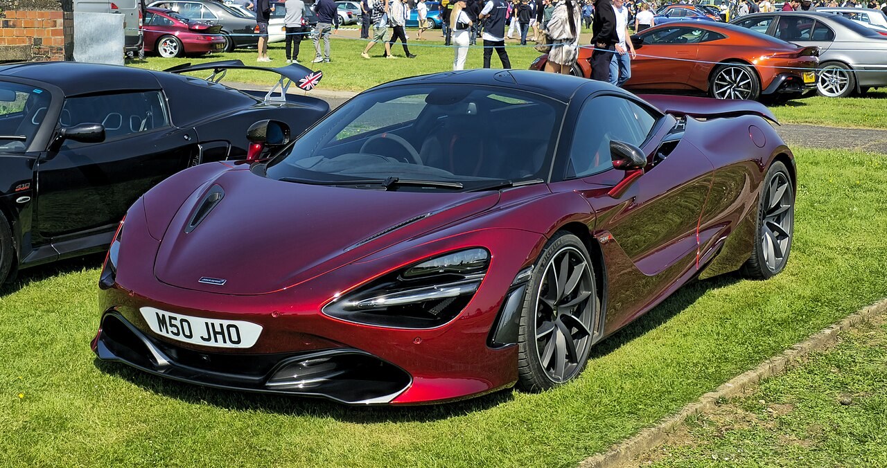

McLaren 720S

Das Meisterwerk aus Carbon
Der McLaren 720S gilt als einer der beeindruckendsten Supersportwagen der Moderne. Eingeführt als Nachfolger des 650S, kombiniert er extremen Leichtbau durch ein Monocoque-Chassis aus Kohlefaser mit einer Aerodynamik, die komplett auf Performance getrimmt ist. Seine markanten „Eye-Socket“-Scheinwerfer dienen gleichzeitig als Luftkanäle zur Kühlung.
Die wichtigsten Eckdaten
- Leistung: 720 PS (530 kW) und 770 Nm Drehmoment
- Motor: 4,0-Liter-V8-Biturbo (Mittelmotor)
- Beschleunigung: 0–100 km/h in 2,9 Sekunden | 0–200 km/h in 7,8 Sekunden
- Höchstgeschwindigkeit: 341 km/h
- Gewicht: 1.283 kg (Trockengewicht Coupé)

Fahrdynamik und Technologie
- Proactive Chassis Control II: Dieses hochentwickelte, hydraulische Fahrwerk vernetzt alle Dämpfer miteinander und macht klassische Stabilisatoren überflüssig – für extremen Grip auf der Rennstrecke bei gleichzeitig erstaunlichem Restkomfort im Alltag.
- Variable Drift Control: Ein Assistenzsystem, mit dem der Fahrer den erlaubten Driftwinkel per Touchscreen stufenlos einstellen kann.
- Aktive Aerodynamik: Der Heckflügel fährt je nach Geschwindigkeit und Fahrmodus automatisch aus, passt seinen Winkel an und fungiert beim harten Anbremsen als Luftbremse (Airbrake).

Der Nachfolger: Der Schritt zum 750S
Ende 2022 lief die Produktion des 720S aus. Seit 2023 ist der McLaren 750S auf dem Markt. Er ist keine komplette Neuentwicklung, sondern eine tiefgreifende Evolution: Er leistet 30 PS mehr, ist nochmals 30 kg leichter, besitzt ein kürzer übersetztes Getriebe für besseren Durchzug und übernimmt das modernere Infotainment-System des McLaren Artura.
